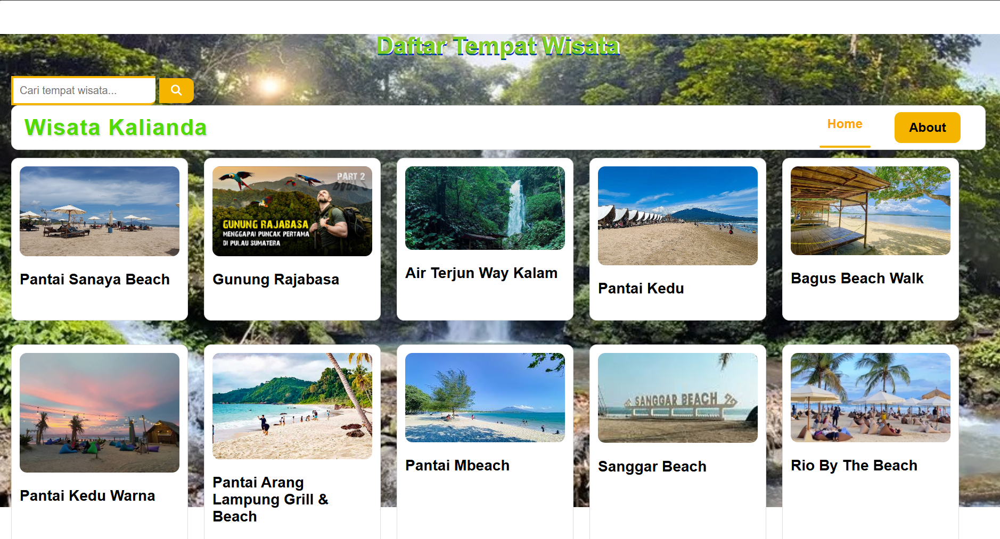
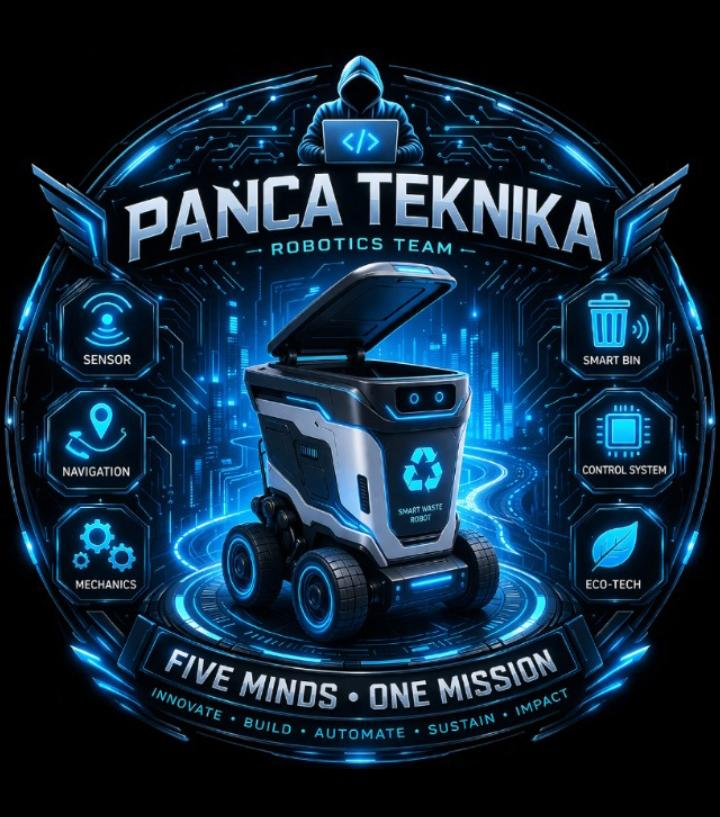

My Projects
Completed

Web Daftar Tempat wisata dikalianda
Ini adalah tempat-tempat wisata yang tepatnya berada di kalianda, mulai dari perpantaian,air terjun,dan destinasi lainnya. Saya membuat website ini bersama teman saya yang bernama Mohamad Nurramadhani.
Lihat selengkapnya.
Web
html
css
In Progress

Design arsitektur sistem pengangkut sampah otomatis berbasis sensor dan sistem navigasi jalur
Sistem tempat sampah otomatis yang bisa mendeteksi kapasitas dan bergerak menuju tempat pembuangan.
with the team (Panca Teknika)
Arduino
Robotics
Java
completed

Poster stop untuk merokok karena dapat merugikan diri sendiri dan orang lain
design
canva